Carimbos
O desenho fica marcado no próprio docinho, e combina com o tema da festa.
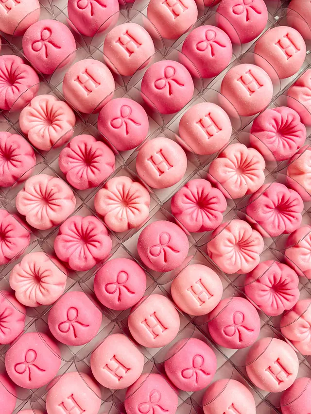
Desenhos que já saíram por aqui
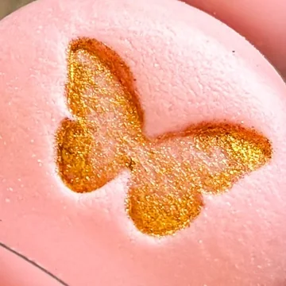
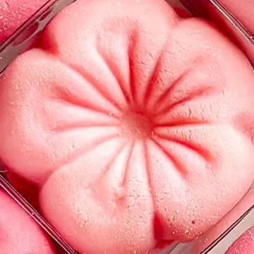
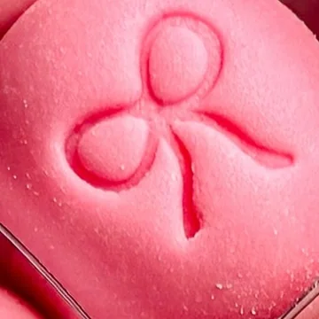
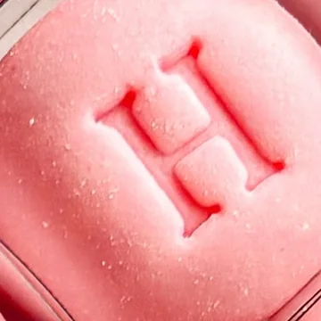
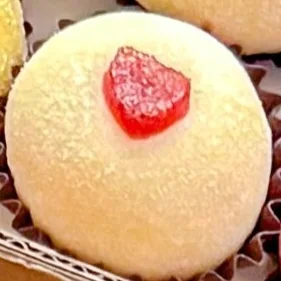
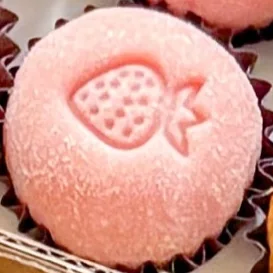
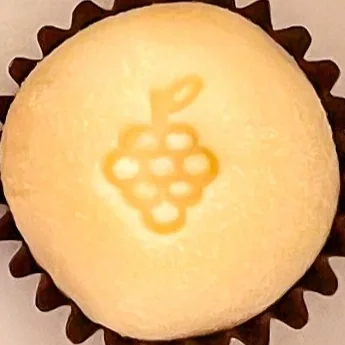
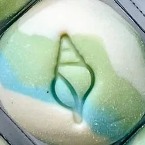
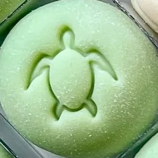
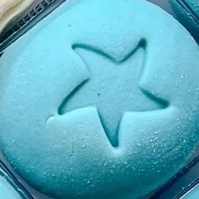
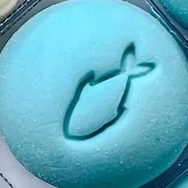
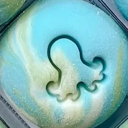
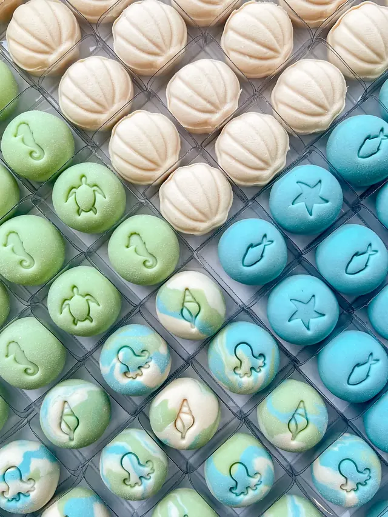
Fundo do mar
Tartaruga, peixe, polvo: um tema inteiro, e não um desenho só.
Perguntar sobre o fundo do mar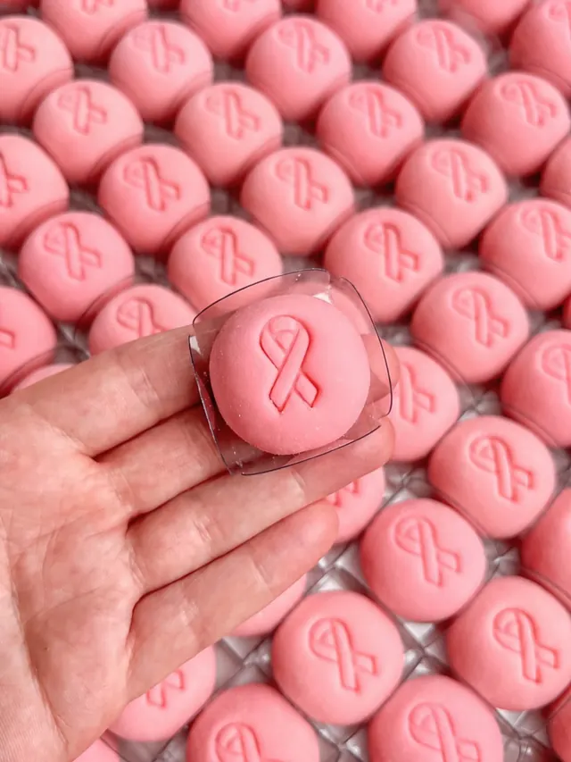
Qual desenho combina com a sua festa?
Mande a ideia pelo WhatsApp (47) 99908-1572.